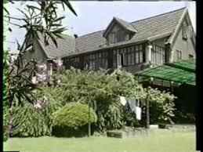
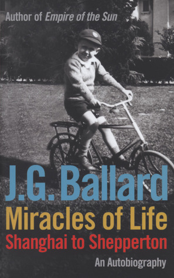
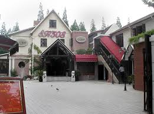
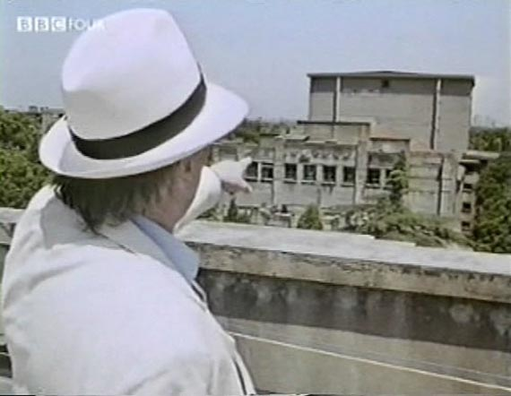
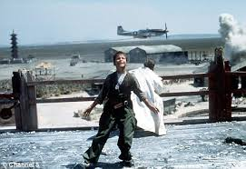
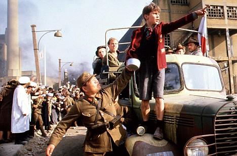

Lunghwa C.A.C. would be an small footnote in the history of WWII if not
for J.G. Ballard’s 1984 semi-autobiographical novel Empire of the Sun,
which depicts Shanghai in 1941-1945 as a metaphor for a Western
Civilization in collapse. The 1987 Hollywood film adaptation,
directed by Steven Spielberg and starring John Malkovitch, Ben Stiller,
and a young Christian Bale ensured an enduring legacy for the camp.
Born in Shanghai in 1930, ‘Jamie’ Ballard grew up in a world of
colonial privilege within the foreign-administered International
Settlement, his father the manager of a British-owned textile mill.

“Driven to the Cathedral School by the family chauffeur, I looked out
at a lurid realm of gambling dens and opium parlours, beggar kings,
rickshaw coolies and mink-coated prostitutes. Each morning the trucks
of the British-dominated administration toured the International
Settlement and removed the bodies of the Chinese who had died during
the night of disease and starvation.”

Despite the coming of war between Japan and China in 1937, Ballard’s
family remained in Shanghai until the Japanese attack on Pearl Harbor
on Dec. 8 1941. In Empire a fictional Jamie is caught up in
the mayhem of the Japanese invasion and is separated from his
parents.

In reality the Japanese occupied the city in an orderly fashion, the
only resistance a brief, one-sided naval battle pitting the HMS Peterel
gunboat against a Japanese heavy cruiser.

Ballard and his family were registered as enemy civilians, given
identifying armbands with the letter ‘B,’ and allowed to live at their
home on Amherst Blvd., now 507 Panyu Lu, near Huashan Lu.

In April 1943, Ballard’s family joined the rest of the Allied civilians
in Shanghai, taking their personal belongings and one bed, and were
transported to Lunghwa Civil Assembly Centre, one of 10 such Centres in
Shanghai. In Empire the camp is depicted as a slow death trap, with
daily abuses by the Japanese guards, the internees fighting over scraps
of food.

Here are Ballard’s specific recollections from an accurate
autobiographical essay, “The End of My War” published in the Sunday
Times of London in 1995.
“Lungha Camp, in the open countryside to the south of Shanghai,
occupied the site of a Chinese teacher-training college.
Class rooms became dormitories, wooden barrack huts housed the
unmarried [men and] women, and the staff bungalows served as the
quarters for the guards and commandant.”
“Our food, for the first year, consisted of grey sweet potatoes, boiled
rice, a coarse brown bread and occasional dice-sized pieces of gristly
meat. Rooms and corridors were a jumble of suitcases and trunks and
sheets hanging over lines of string converted the open dormitories into
a maze of tiny cubicles.”
“…[T]he Ballards were assigned one of the forty small rooms in G Block,
so cramped that during the day my father propped his mattress against
the wall and set up a card table from which we could eat our meals.
“Life in Lunghua was dominated by the overheated summers and freezing
winters, by stench, noise and boredom.”
“Lunghua camp was a huge slum, and as in all slums the teenage boys ran
wild.”
“I was enthralled… I roved around the camp, sitting in on bridge and
poker games, curious to know how people were adapting to internment…
Architects, lawyers, engineers, and plant managers, they were bored
enough to play a game of chess and dispense a little cynical wisdom to
an impressionable young ear.”
“Still intrigued by the Japanese, I soon met some of the
guards. Hanging around their bungalows, I realized they were
also imprisoned in Lunghua. The younger soldiers invited me
into their bare and unfurnished rooms. They strapped me into
their kendo armour and taught me to fence, a whirl of wooden swords
that usually sent me back to G block dazed, head ringing from a dozen
blows.”
In retrospect, I realize that internment helped people to discover
unknown sides of themselves. They conserved their emotions,
and kept a careful inventory of hopes and feelings. …[Q]uick-tempered
people could be surprisingly generous and …some of the missionaries who
had devoted their lives to the Chinese peasantry could show a curious
strain of selfishness. A few chronic idlers refused to work, but most
people buckled down to their assigned tasks. The internees ran the
camp, cooking the rations and maintaining the septic tanks and water
supply.”
“[My] father and I tended a small garden plot, hoisting buckets of
excrement from the G Block septic tank to fertilize the beds.
All over the camp cucumber frames rose from the carefully tilled
soil. Tomatoes and melons supplemented our diet, but by 1944
I had long forgotten the taste of meat, milk, butter, and sugar.”
“Our rations continued to fall, and the American bombing raids on the
Japanese airfield next to the camp provoked the guards into senseless
acts of brutality.”
“VJ Day, everywhere else in the world, lasted for twenty-four hours but
in the countryside around Lunghua it seemed to go on for days. The
war-clocks had stopped.”
“The Ballard family left Lunghua a week after the ceasefire, but I
often returned to the camp, hitching rides from passing American
trucks. I still felt Lunghua was my real home. I
had come to puberty there, and developed the beginnings of an adult
mind. I had seen adults under stress, a valuable education I would
never have received in a peacetime Shanghai.”